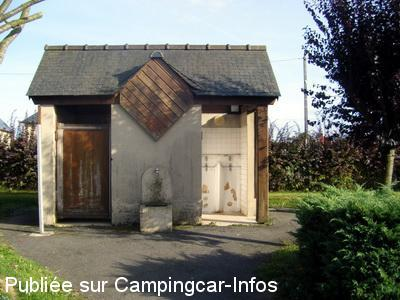
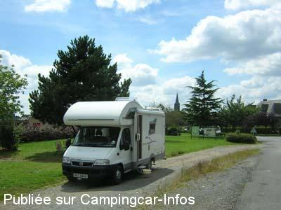
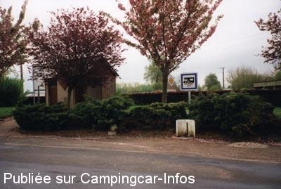

ASN = Aire de services avec stationnement nuit possible de :
ROMAGNE
(N° 595)
Accès/adresse :
Allée des Prunus
Rue de Fougères
35133 ROMAGNE
Rue de Fougères
35133 ROMAGNE
Latitude : (Nord) 48.34507° Décimaux ou 48° 20′ 42′′
Longitude : (Ouest) -1.27222° Décimaux ou -1° 16′ 19′′
Tarif : Gratuit
Services :


Autres informations :
Ouverte toute l'année
5 emplacements, goudronnés, éclairés, un peu en pente,
Tel : +33 (0)299 988 111

Le 05/09/2008 par Xtian74

Le 19/08/2007 par david

Le 08/05/2003 par nomade 59
de
Xtian74
le 07/10/2013 :
Passage les 6 & 7/10/2013. Le secteur a été aménagé et un parking goudronné un peu au Nord de la zone de services permet le stationnement mais comme il est le long de la route passante, il est bruyant. Le stationnement le long du cimetière, plus à l'écart permet de passer des nuits tranquilles. La zone de services reste malheureusement en mauvais état, mais elle était propre à notre passage.
Deux nuits en compagnie chaque fois de 2 autres CC.
Passage les 6 & 7/10/2013. Le secteur a été aménagé et un parking goudronné un peu au Nord de la zone de services permet le stationnement mais comme il est le long de la route passante, il est bruyant. Le stationnement le long du cimetière, plus à l'écart permet de passer des nuits tranquilles. La zone de services reste malheureusement en mauvais état, mais elle était propre à notre passage.
Deux nuits en compagnie chaque fois de 2 autres CC.
de
gwenaelle guivarch
le 29/10/2009 :
Nous y sommes passés lors de ces vacances. L'aire est au bord d'une route passante donc, pour dormir, nous sommes allés plus loin. Nous n'avons pas utilisé les services.
Nous y sommes passés lors de ces vacances. L'aire est au bord d'une route passante donc, pour dormir, nous sommes allés plus loin. Nous n'avons pas utilisé les services.
de
Xtian74
le 05/09/2008 :
Passage les 1-2 & 3/09/08. Lors de mon passage, l'aire était propre. Bon, l'installation est ancienne et mériterait un relookage, notamment le réceptacle des eaux noires contre le mur des toilettes, mais elle "a le mérite d'exister".
Passage les 1-2 & 3/09/08. Lors de mon passage, l'aire était propre. Bon, l'installation est ancienne et mériterait un relookage, notamment le réceptacle des eaux noires contre le mur des toilettes, mais elle "a le mérite d'exister".
de
la_famille_escargot_36
le 04/03/2007 :
Propriétaire depuis peu de notre CC, nous revenons d'un petit périple de 8 jours dans l'ouest et avons utilisé certaines aires répertoriées. Arrivés de nuit sur place à Romagné, l'aire n'est pas très pratique : pour la vidange des eaux grises et pour les WC, nous n'avons trouvé que le WC à la turque des WC publics. Doit-on vraiment le faire? Pour le parking, privilégier le long du cimetière (nous étions 3 CC cette nuit-là) et en allant un peu plus loin, en partant, nous avons trouvé un parking sympa (suivre la rue de l'Atrium).
Propriétaire depuis peu de notre CC, nous revenons d'un petit périple de 8 jours dans l'ouest et avons utilisé certaines aires répertoriées. Arrivés de nuit sur place à Romagné, l'aire n'est pas très pratique : pour la vidange des eaux grises et pour les WC, nous n'avons trouvé que le WC à la turque des WC publics. Doit-on vraiment le faire? Pour le parking, privilégier le long du cimetière (nous étions 3 CC cette nuit-là) et en allant un peu plus loin, en partant, nous avons trouvé un parking sympa (suivre la rue de l'Atrium).
de
Lizer Richard
le 12/09/2006 :
Aire très sale et donc mal entretenue et en plus c'est bruyant. Mais c'est gratuit.
Aire très sale et donc mal entretenue et en plus c'est bruyant. Mais c'est gratuit.
de
les vaillants
le 17/06/2006 :
Aire vraiment pas propre, WC dégoutants et le robinet d'eau laisse vraiment à désirer... Nous avons passé notre chemin...
Aire vraiment pas propre, WC dégoutants et le robinet d'eau laisse vraiment à désirer... Nous avons passé notre chemin...